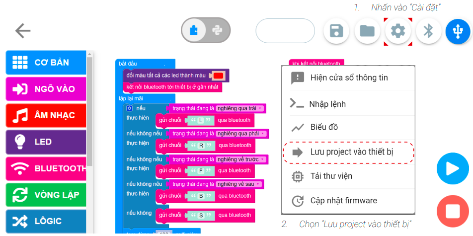
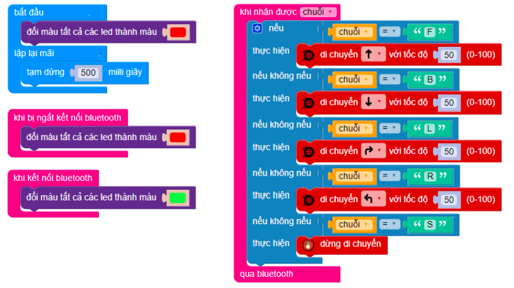

18. Bài 15: Giao tiếp cùng đồng đội
Yolo:Bit là đồng đội tiếp theo sẽ hỗ trợ Rover. Cả hai sẽ cùng giao tiếp với nhau để hoàn thành nhiệm vụ
Mục tiêu
Làm quen với giao tiếp giữa 2 Yolo:Bit
Điều khiển cơ bản Rover với Yolo:Bit khác
Giao tiếp giữa Rover và Yolo:Bit
Các Yolo:Bit có thể giao tiếp với nhau. Bằng cách này chúng ta có thể sử dụng một Yolo:Bit khác như máy điều khiển để điều khiển hoạt động của Rover
{kind=link}
Đặt tên cho Yolo:Bit
Để phân biệt Yolo:Bit trên Rover và Yolo:Bit còn lại chúng ta cần đặt tên cho chúng:
{kind=link}
{kind=link}
{kind=link}
Viết chương trình
Viết thuật toán cho Yolo:Bit riêng lẻ
{kind=link}
Tạo các sự kiện khi kết nối và ngắt kết nối Bluetooth
{kind=link}
Kết nối Bluetooth tự động và sáng đèn màu đỏ
{kind=link}
Tạo nhóm điều kiện gộp tương ứng với trạng thái nghiêng của Yolo:Bit
{kind=link}
Đặt lệnh gửi đi tương ứng trong thuật toán
{kind=link}
Tạm dừng 100milli giây ở cuối chương trình
{kind=link}
Chương trình đầy đủ cho Yolo:Bit riêng lẻ
{kind=link}
Lưu chương trình vào Yolo:Bit
Để không bị mất chương trình trên Yolo:Bit sau khi ngắt kết nối, bạn cần lưu chương trình vào Yolo:Bit. Thực hiện như sau:

{kind=link}
Viết thuật toán cho Yolo:Bit trên Rover
{kind=link}
Viết các lệnh phù hợp với tín hiệu nhận được từ Yolo:Bit khác

{kind=link}
Chương trình mẫu
Giao tiếp cùng đồng đội: Tại đây